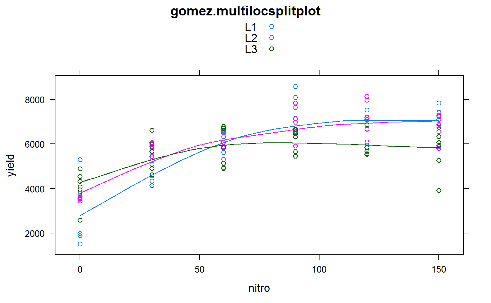

gomez.multilocsplitplot.RdGrain yield was measured at 3 locations with 2 reps per location. Within each rep, the main plot was 6 nitrogen fertilizer treatments and the sub plot was 2 rice varieties.
A data frame with 108 observations on the following 5 variables.
loclocation, 3 levels
nitronitrogen in kg/ha
repreplicate, 2 levels
gengenotype, 2 levels
yieldyield, kg/ha
Gomez, K.A. and Gomez, A.A.. 1984, Statistical Procedures for Agricultural Research. Wiley-Interscience. Page 339.
Used with permission of Kwanchai Gomez.
library(agridat) data(gomez.multilocsplitplot) dat <- gomez.multilocsplitplot dat$nf <- factor(dat$nitro) # Gomez figure 8.3 libs(lattice) xyplot(yield~nitro, dat, group=loc, type=c('p','smooth'), auto.key=TRUE, main="gomez.multilocsplitplot")# AOV # Be careful to use the right stratum, 'nf' appears in both strata. # Still not quite the same as Gomez table 8.21 t1 <- terms(yield ~ loc * nf * gen + Error(loc:rep:nf), "Error", keep.order=TRUE) m1 <- aov(t1, data=dat)#> Warning: Error() model is singularsummary(m1)#> #> Error: loc:rep:nf #> Df Sum Sq Mean Sq #> loc 2 4401065 2200532 #> nf 5 136849095 27369819 #> gen 1 2752683 2752683 #> loc:nf 10 18591666 1859167 #> loc:gen 2 258519 129260 #> nf:gen 5 1018467 203693 #> loc:nf:gen 10 6477080 647708 #> #> Error: Within #> Df Sum Sq Mean Sq F value Pr(>F) #> gen 1 7085791 7085791 18.326 7.67e-05 *** #> loc:gen 2 5171261 2585630 6.687 0.00254 ** #> nf:gen 5 3034192 606838 1.569 0.18437 #> loc:nf:gen 10 1487520 148752 0.385 0.94801 #> Residuals 54 20879417 386656 #> --- #> Signif. codes: 0 '***' 0.001 '**' 0.01 '*' 0.05 '.' 0.1 ' ' 1# F values are somewhat similar to Gomez Table 8.21 libs(lme4) m2 <- lmer(yield ~ loc*nf*gen + (1|loc/rep/nf), dat)#> Warning: unable to evaluate scaled gradient#> Warning: Hessian is numerically singular: parameters are not uniquely determinedanova(m2)#> Analysis of Variance Table #> Df Sum Sq Mean Sq F value #> loc 2 407688 203844 0.5271 #> nf 5 72885372 14577074 37.6944 #> gen 1 7558837 7558837 19.5462 #> loc:nf 10 10143064 1014306 2.6229 #> loc:gen 2 4268700 2134350 5.5191 #> nf:gen 5 1501333 300267 0.7765 #> loc:nf:gen 10 1503043 150304 0.3887## Analysis of Variance Table ## Df Sum Sq Mean Sq F value ## loc 2 117942 58971 0.1525 ## nf 5 72841432 14568286 37.6777 ## gen 1 7557570 7557570 19.5460 ## loc:nf 10 10137188 1013719 2.6218 ## loc:gen 2 4270469 2135235 5.5223 ## nf:gen 5 1501767 300353 0.7768 ## loc:nf:gen 10 1502273 150227 0.3885